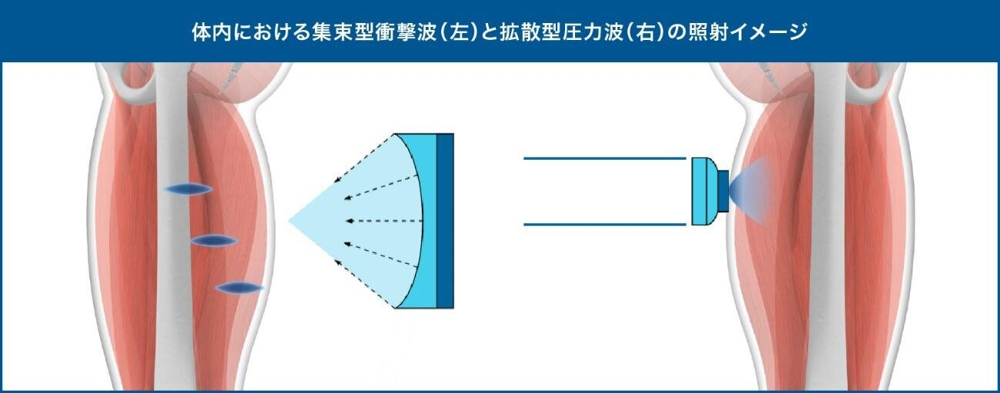
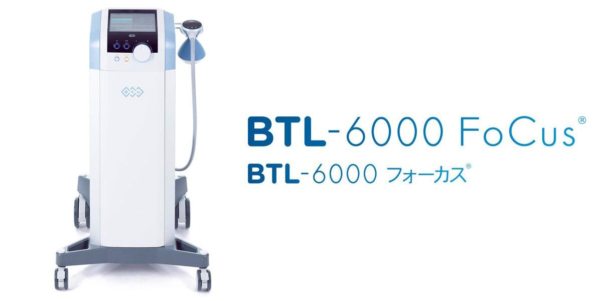

集束型体外衝撃波
体外衝撃波治療とは、衝撃波を患部に照射する整形外科では最新の治療法です。
日本では泌尿器科領域において、腎臓・尿管結石の破砕を行うために使われることが有名で、この技術を整形外科的に応用したものです。
＜体外衝撃波の種類＞
体外衝撃波による治療方法には、「集束型衝撃波」と「拡散型圧力波」の2種類があります。
当院で導入した「集束型体外衝撃波」は、特定の部位と深さに衝撃波を集中させることができ、患部にピンポイントでアプローチできる機種です。

＜体外衝撃波治療の特徴＞
- 皮膚に衝撃波を当てるだけですので、少し痛みを伴いますが、身体に負担をかけずに、痛みを緩和させることが可能です。
- ドーピング検査のためステロイドの注射ができない選手、妊娠中や産後のママさん、糖尿病がありステロイドの注射ができない患者さんにも使用できる治療法です。
- 当院で導入する「集束型体外衝撃波」は、衝撃波を患部に集中して照射することができ、優れた即時除痛効果があります。
- 最新の論文で骨折の治癒促進や離断性骨軟骨炎に対して有効性が報告されています。
（参考；日本運動器SHOCK WAVE研究会HP）
http://josst.org/treatment.html
＜体外衝撃波の効果＞
- 痛みを軽減(患部の自由神経終末の減少)
- 炎症を軽減
- 血流改善
- 組織修復促進
- 骨形成の促進
＜対象疾患＞
現時点で日本国内では、6か月以上治療してもよくならない難治性の足底腱膜炎のみ保険治療となっております。
当院では、保険適応以外の疾患にも、新しい治療の選択肢として、集束型体外衝撃波の治療を行っております。
- 足底腱膜炎（６ヶ月以上続く難治性の症例のみ、保険適応）
- アキレス腱炎
- 外脛骨障害
- 種子骨炎
- 足関節インピンジメント症候群
- 膝蓋腱炎
- オスグッド病
- 変形性膝関節症
- 野球肘（上腕骨小頭離断性骨軟骨炎）
- テニス肘（上腕骨外側上顆炎）
- ゴルフ肘（上腕骨内側上顆炎）
- ばね指、屈筋腱腱鞘炎
- ドゥケルバン腱鞘炎
- CM関節症
- 手関節TFCC損傷
- へバーデン結節、ブシャール結節
- 骨折後の偽関節（癒合不全）
- 各部位の疲労骨折
＜治療の実際について＞
治療部位を超音波で確認し衝撃波の照射を開始します。１回の治療時間は約10〜15分くらいです。
１回の衝撃波照射で効果の高い患者さんもいらっしゃいますが、一定期間（1〜3週間）間隔をあけ、2、３回の衝撃波照射を行うことにより、効果が上がる場合も多いと報告されています。さらに複数回衝撃波照射を行う場合もあります。
衝撃波照射中はツンツンと痛みがあります。衝撃波の出力を調整し、我慢のできる範囲で最大の強さで照射します。
疾患により、また患部の状態により、効果は違いますが、報告と経験より60〜80％の患者さんに効果があります。
当院では、体外衝撃波のみの治療だけではなく、理学療法との組み合わせで、更なる効果を目指しております
＜治療費用＞
難治性足底腱膜炎の場合（保険診療）
6か月以上の保存療法（投薬、理学療法、インソールなどの治療）にもかかわらず痛みが改善しない患者さんが対象
5,000点（一連の治療で3回程度の治療の合計）
15,000円
3割の方の自己負担
5,000円
1割の方の自己負担
※初診料、再診料、理学療法や検査の費用は別途かかります
それ以外の対象疾患の場合（自費診療）
初回施行
5,000円（消費税別）
２回目以降
3,000円（消費税別）
※学生割引制度もあります
＜機種の紹介＞
当院では最新機器である集束型の体外衝撃波疼痛装置「BTL-6000 フォーカス」を導入しています。
「体外衝撃波疼痛治療装置」は、厚生労働省の薬事承認を取得した医療機器で、本機器は0.27mJ/mm²まで設定可能な国内において最大出力の体外衝撃波疼痛治療装置であり、幅広い焦点範囲（0-65mm）に対応しており、表層から深部までの組織が治療可能となります。



休診日／木曜午後・土曜午後・日曜・祝祭日 ※受付は午前、午後とも30分前からです。